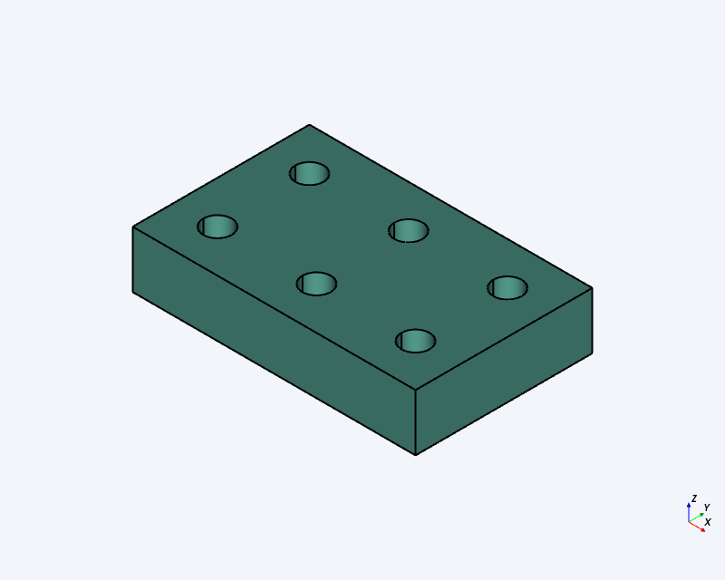
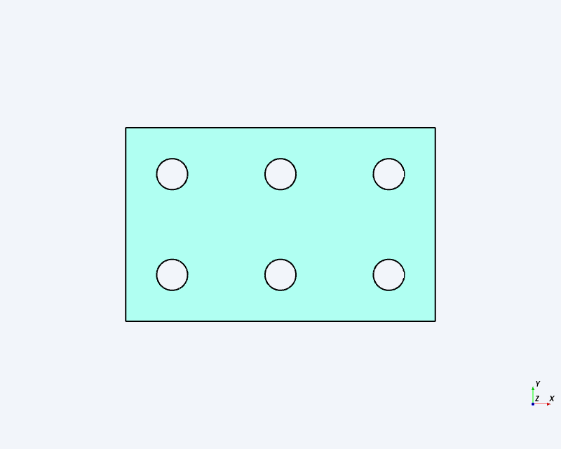
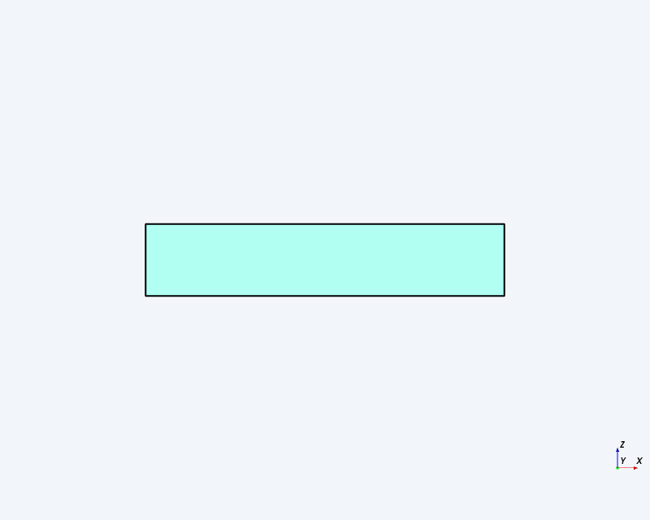
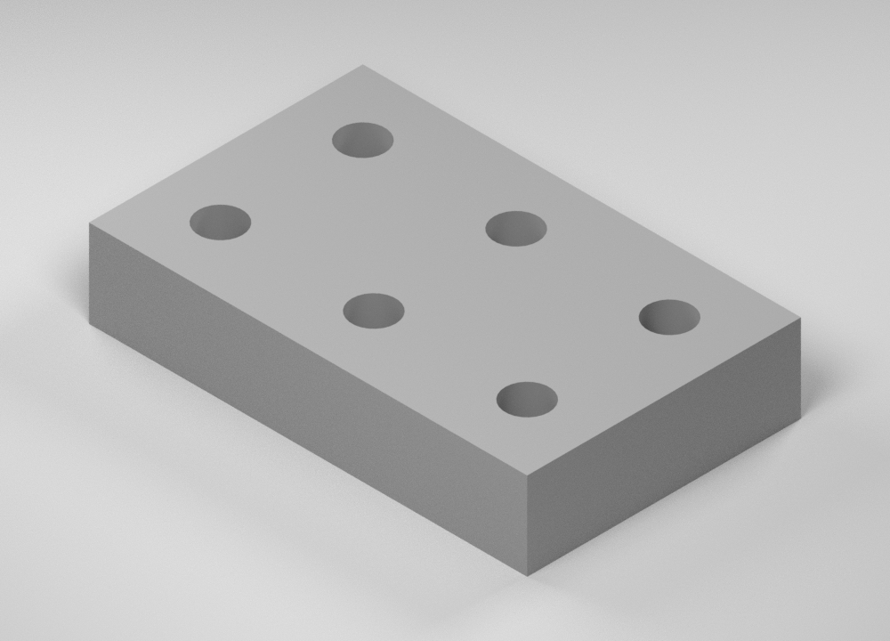
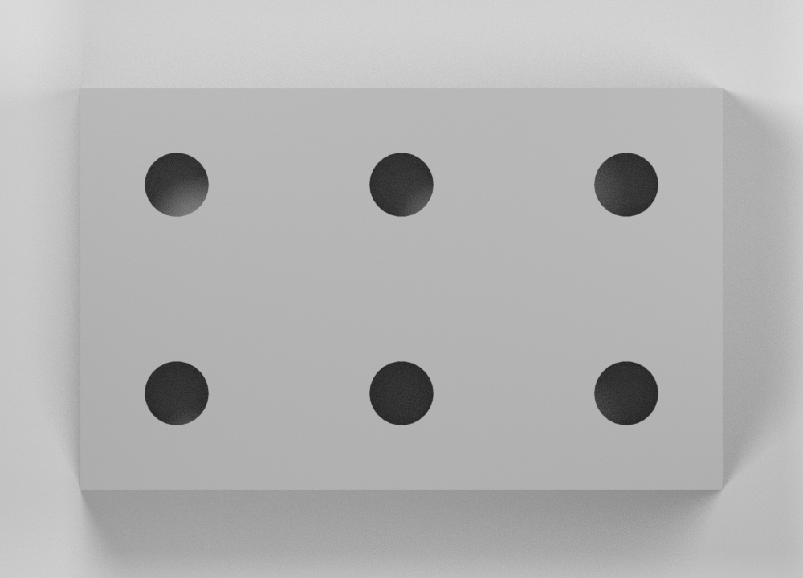
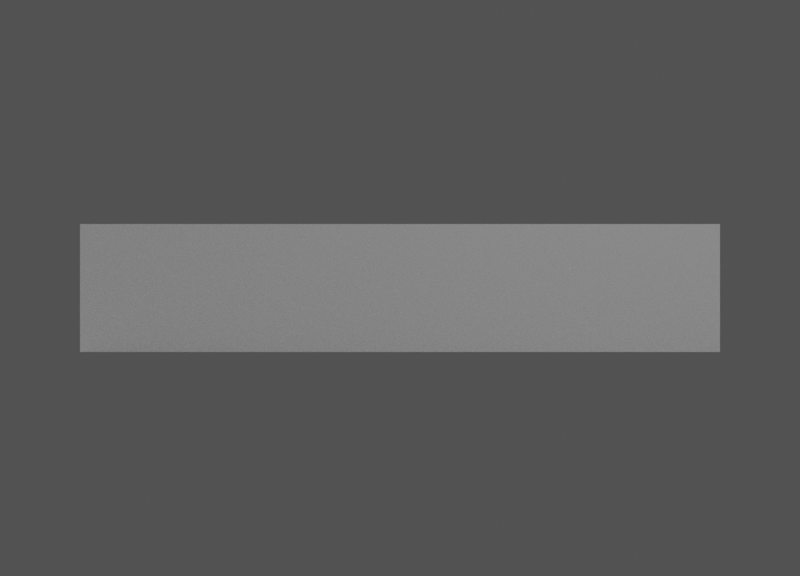

Digital Design Review: Six-Hole Rectangular Block
Open the editable SteveCAD document (revision 1).
Design intent. One millimetre-based rectangular component, block, with six named plain Ø8 through holes in a 3 × 2 pattern. No fillets, chamfers, counterbores, text, extra components, physical-material assignment, or mechanical-property claim.
This report records a digital design review and does not record human acceptance. Geometric measurements come from CAD/B-rep inspection; image findings below are qualitative and do not establish dimensions, pixel identity, or geometric compliance.
1. Requirement Checks
| ID | Requirement / tolerance | Actual evidence | Result |
|---|---|---|---|
| R01 | mm frame; origin (0,0,0); bounds ±0.01 mm | X 0.00..80.00, Y 0.00..50.00, Z 0.00..16.00 mm; +X length, +Y width, +Z up | PASS |
| R02 | One 80 × 50 × 16 mm solid before subtraction | Final envelope is 80.00 × 50.00 × 16.00 mm and one solid. No retained pre-subtraction state was available for direct inspection. | UNVERIFIED |
| R03 | Exactly six named plain holes; Ø8.00 ±0.01 mm | h01–h06; six cylindrical walls, each Ø8.00 mm; no stepped profiles reported | PASS |
| R04 | Six specified XY centres, each coordinate ±0.01 mm | All measured centres equal nominal; every X/Y deviation 0.00 mm | PASS |
| R05 | Z-parallel; Z=0..16; depth 16.00 ±0.01 mm | All axes (0,0,−1), each length 16.00 mm from Z=16 to Z=0 | PASS |
| R06 | 1 solid, 1 component; no prohibited geometry | 1 solid, 1 component, 12 faces, zero other round faces; captures show no prohibited visible features | PASS |
| R07 | 59,174.5137 mm³; relative error ≤0.1% | 59,174.51368408604 mm³; deviation 0.00001591396 mm³; relative deviation 2.6893×10−10 | PASS |
| R08 | Per-hole diameter, axis, and depth | Each: Ø8.00 mm, axis (0,0,−1), Z extent 0..16 mm, depth 16.00 mm | PASS |
| R09 | Isometric, +Z top, −Y front CAD captures | Exactly three complete-component orthographic captures at 800 × 640 px | PASS |
| R10 | Three corresponding neutral matte-gray studio renders | Three supplied native Blender renders visually match the requested view conventions and use neutral matte gray; no mechanical properties claimed | PASS |
| R11 | Five review sections, six images, R01–R11 dispositions | This final document contains all five named sections, all six supplied images, dispositions for R01–R12, observations, and the unresolved finding | PASS |
| R12 | Current dimensions and pattern govern validation | Traceability consistently cites 80 × 50 × 16 mm and the current six-coordinate pattern on revision 1/build shown above | PASS |
2. Actual Observations
| Feature | Nominal / actual centre (mm) | Actual diameter | Actual Z extent / axis |
|---|---|---|---|
block | Bounds nominal = actual: X 0..80, Y 0..50 | — | Z 0..16 mm |
h01 | (12,12) / (12.00,12.00) | 8.00 mm | 0..16 mm / (0,0,−1) |
h02 | (40,12) / (40.00,12.00) | 8.00 mm | 0..16 mm / (0,0,−1) |
h03 | (68,12) / (68.00,12.00) | 8.00 mm | 0..16 mm / (0,0,−1) |
h04 | (12,38) / (12.00,38.00) | 8.00 mm | 0..16 mm / (0,0,−1) |
h05 | (40,38) / (40.00,38.00) | 8.00 mm | 0..16 mm / (0,0,−1) |
h06 | (68,38) / (68.00,38.00) | 8.00 mm | 0..16 mm / (0,0,−1) |
Derived checks: adjacent X spacing 28.00 mm, row spacing 26.00 mm, and minimum X/Y hole-edge clearance 8.00 mm; all are within ±0.01 mm of nominal.
Export and render traceability: full export of document 4fef47b1-ac25-432d-897d-3dba016a2cde, revision 1, build 82cee1d2-2566-4704-b60a-527d3be3b4c5; render run bddd667df90544018d1b2d1d004abf1a. The geometry-matching report records one CAD mesh, 0.001 metres per input millimetre, 660 polygons, extent error 0.0000056624 mm, geometry_changes=false, and color #aaaaaa. This supports the transfer chain but is not a claim of B-rep, byte, or pixel identity. A different full-build ID on the same revision would be a distinct export identity, not by itself evidence of geometry change.
3. CAD Views



4. Presentation Images and Pair Evaluation



5. Unresolved Findings
Actual CAD failures: none recorded. Other unresolved findings: none. The completed image and document evidence resolves the previously deferred R10–R12 evaluations; they are not carried forward as failures.